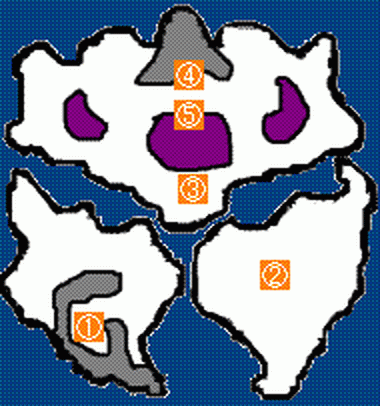

- 세계 지도
- 요정의 세계
- 마계
※ 지명(J)는 주문 :
루라에 등록되는 지명만 표기합니다.
세계 지도
| 번호 |
지명(K) |
지명(J) |
번호 |
지명(K) |
지명(J) |
번호 |
지명(K) |
지명(J) |
| 1 |
비스타 항구 |
|
16 |
루라펜 |
ルラフェン |
31 |
티조트의 산길 |
|
| 2 |
산타로즈 |
サンタローズ |
17 |
폭포의 동굴 |
|
32 |
그랑바니아의 동굴 |
|
| 3 |
알카파 |
アルカパ |
18 |
소문의 사당 |
|
33 |
그랑바니아 |
グランバニア |
| 4 |
레누르성 |
|
19 |
산속의 마을 |
|
34 |
북쪽의 교회 |
きたのきょうかい |
| 5 |
봉인의 동굴 |
|
20 |
루라펜 남쪽 동굴 |
|
35 |
데몬즈 타워 |
|
| 6 |
라인하트 |
ラインハット |
21 |
사라보나 |
サラボナ |
36 |
시련의 동굴 |
|
| 7 |
고대의 유적 |
|
22 |
미혹의 숲 |
|
37 |
지하유적의 동굴 |
|
| 8 |
라인하트의 관문 |
|
23 |
죽음의 화산 |
|
38 |
엘헤븐 |
エルヘブン |
| 9 |
오라클 베리 |
オラクルベリー |
24 |
봉인의 사당 |
|
39 |
바다의 신전 |
|
| 10 |
해변의 수도원 |
しゅうどういん |
25 |
텔파도르 |
テルパドール |
40 |
천공의 탑 |
|
| 11 |
숲속의 사당 |
|
26 |
사막의 사당 |
|
41 |
요정의 성 |
|
| 12 |
신의 탑 |
|
27 |
보블의 탑 |
|
42 |
대신전 |
|
| 13 |
포트셀미 |
ポートセルミ |
28 |
명산 박물관 |
めいざんはくぶつかん |
43 |
부자의 저택 |
|
| 14 |
카보치 |
カボチ |
29 |
메달왕의 성 |
メダルおうのしろ |
44 |
카지노선 |
|
| 15 |
마물의 소굴 |
|
30 |
네드의 여관 |
ネッドのやどや |
45 |
땅끝의 사당 |
|
요정의 세계
| 번호 |
지명(K) |
지명(J) |
| 1 |
요정의 마을 |
ようせいのむら |
| 2 |
드워프의 동굴 |
|
| 3 |
얼음의 관 |
|
마계

| 번호 |
지명(K) |
지명(J) |
| 1 |
마계의 사당 |
|
| 2 |
쟈한나 |
ジャハンナ |
| 3 |
마계 주사위장 |
|
| 4 |
에빌 마운틴 |
エビルマウンテン |
| 5 |
의문의 동굴 |
|